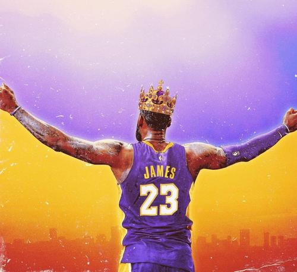
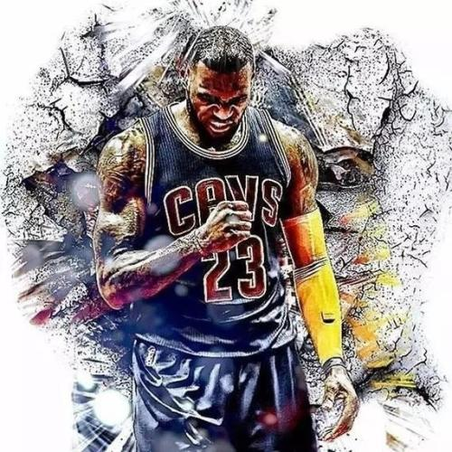
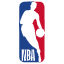
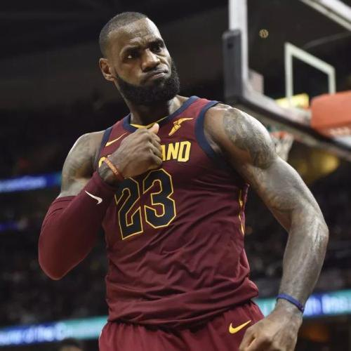
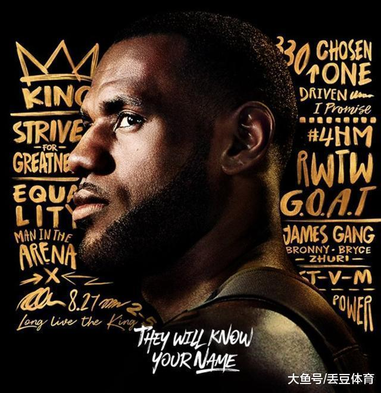

CHONSE ONE
不管你是否喜欢詹姆斯，你在见证的是20年来最伟大的表演。
要好好珍惜这段时光，不要等到他退役了再说他带走了我们的青春。
从乔丹到科比再到詹姆斯，这些伟大的球员总会有让我们看得热泪盈眶的瞬间。
|

2012年6月21日
2012年，詹姆斯得到NBA个人生涯的第3座常规赛MVP，第1个总冠军和总决赛MVP，
|


2013年6月20日
2013年，詹姆斯夺得第4个常规赛MVP、第2个NBA总冠军和第2个总决赛MVP，实现两连冠。
|

2016年6月19日
2016年，詹姆斯带领骑士逆转战胜卫冕冠军勇士夺得队史首个总冠军和个人第3个总决赛MVP。
|

2020年10月12日
2019-20赛季，詹姆斯当选NBA助攻王，夺得第4次总冠军以及个人第4个总决赛MVP。
|
| 最初的赛季 2003年6月27日，在2003年NBA选秀中，詹姆斯被克利夫兰骑士队选中。 7月4日，詹姆斯与骑士签订了一份为期三年、总金额1296万美元的合同。 | |||
| 初露锋芒 2005-2006赛季，詹姆斯带领骑士首次打进了季后赛。 2006年1月21日，詹姆斯在对阵爵士的比赛拿下51分，成为历史上最年轻的总得分达到5000分的球员 | |||
| 蝉联MVP 2008-2009赛季，詹姆斯所率领骑士取得了66胜16负的联盟最佳战绩，詹姆斯也在这一年获得了 自己职业生涯的第一座常规赛MVP奖杯 | |||